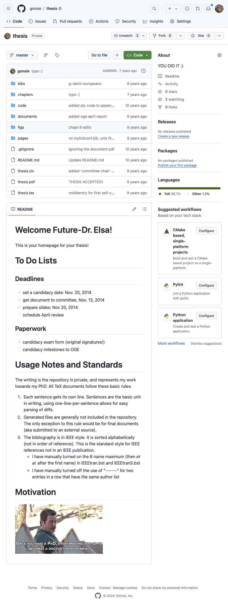
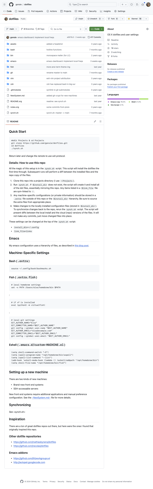

Introduction to Version Control With Git
Elsa Gonsiorowski
July 29, 2024
Created: 2024-07-29 Mon 12:48
1. Introduction
Elsa Gonsiorowski
- HPC I/O Support Specialist in Livermore Computing since 2016
- Developer for SCR: Scalable Checkpoint Restart library
- LC Hotline tech
- Working remotely in RI
- Excited about emacs, org-mode, static websites, fish shell, cmake, documentation, crossfit, rowing, knitting
Schedule for the Week
| Version Control with GIT | Mon |
| Functional Programming | Tue |
| Object Oriented Design | Wed |
| Intro to Containers | Thu |
| Software Quality Assurance | Fri |
Caveats
- This is a 1 hour session, there is so much more to learn!
- You can type along, but I will be moving fast
- Slides available on
myconfluence.llnl.gov/display/CF
Raise Your Hand
- If you can find the "Raise Hand" button on Webex
- If you know someone else attending this lecture
- If you've played a video game with "checkpoints"
- If you've used "Track Changes" (MS Word or Google Docs)
- If you know you have git installed on your system
2. Theory: What is Version Control
VC Through Naming

VC in Parallel

Key Features
- Version control allows you take checkpoints or snapshots as you work on a project
- Version control is unlimited undo (but not at a granular level)
- Version Control allows many people to work in parallel
3. Practice: Live Demos
Assumptions
- You are familiar with working on the command line
You know the commands:
lslist files, with the flags -alcdchange directory mkdirmake directory echorepeat text >output redirection
Using These Slides
- Code and command examples are written in a fixed-width font:
like this - Commands that you should run in a terminal (or "on the command line") are shown with a leading
$. Do not include the$when actually trying to run the command
4. Skill 1: Configuring Git
Configuring from the Command Line
$ git config --global user.name "Ada Lovelace"
$ git config --global user.email "ada@lovelace.io"
$ git config --global core.editor "emacs -nw"
$ git config --global init.defaultBranch main
Help with Config
$ git config --list
$ git config --help
$ cat ~/.gitconfig
File: ~/.gitconfig
[core]
editor = emacs -nw
[init]
defaultBranch = main
[user]
name = Ada Lovelace
email = ada@lovelace.io
5. Skill 2: Creating a Repository
Create a Repository
$ cd ~/Desktop
$ ls -al
$ mkdir Planets
$ cd Planets
$ git init
Initialized empty Git repository in /Users/gonsie/Desktop/Planets/.git/
$ ls -al
total 0
drwxr-xr-x 3 gonsiorowski1 59746 96 Jul 11 10:43 .
drwx------@ 16 gonsiorowski1 59746 512 Jul 11 10:43 ..
drwxr-xr-x 9 gonsiorowski1 59746 288 Jul 11 10:43 .git
Query Git
$ git status
On branch main
No commits yet
nothing to commit (create/copy files and use "git add" to track)
6. Skill 3: Tracking Changes
Add a File
$ echo "Cold and dry, but everything is my favorite color" > mars.txt
$ ls -al
total 0
drwxr-xr-x 3 gonsiorowski1 59746 96 Jul 11 10:43 .
drwx------@ 16 gonsiorowski1 59746 512 Jul 11 10:43 ..
drwxr-xr-x 9 gonsiorowski1 59746 288 Jul 11 10:43 .git
-rw-r--r-- 1 gonsiorowski1 59746 50 Jul 11 11:08 mars.txt
$ git status
On branch main
No commits yet
Untracked files:
(use "git add <file>..." to include in what will be committed)
mars.txt
nothing added to commit but untracked files present (use "git add" to track)
Start Tracking Your File
$ git add mars.txt
$ git status
On branch main
No commits yet
Changes to be committed:
(use "git rm --cached <file>..." to unstage)
new file: mars.txt
$ git status --short
A mars.txt
Commit Your Changes
$ git commit -m "started work on mars.txt"
[main (root-commit) 3383acd] started work on mars.txt
1 file changed, 1 insertion(+)
create mode 100644 mars.txt
$
$ git status
On branch main
nothing to commit, working tree clean
7. Motivation: Why should I bother?
gonsie/thesis

gonsie/dotfiles

8. Continue Your Journey
This is just the beginning
- More things to learn:
- Explore history
- Collaboration through "pull" or "merge" requests
- Platforms: GitHub and GitLab
Git Caveats
- Git is powerful
- Git has a terrible user design
- Git is hard to fully learn by yourself
- Git (like any other tool) takes time and practice to get good
Get Social
- Sign up for GitHub
- Follow your friends, star your favorite (LLNL) projects
- If you follow me this week I will follow you back
- With permission: use GitHub to showcase projects
- Get approval before posting LLNL code
- Get permission before posting homework solutions
Git Lessons
Advanced Git Resources
9. Credits
Content for this talk was taken from Software Carpentry: Git Novice
Tools
Created with Emacs, Org Mode, and RevealJS.
View the source.